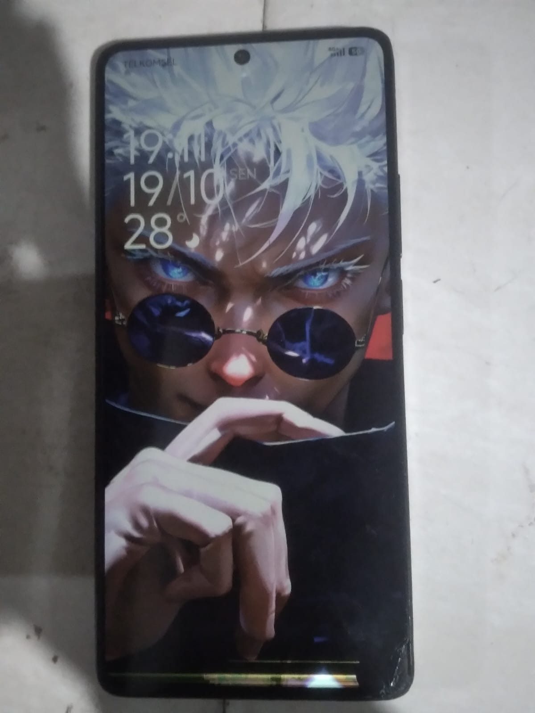
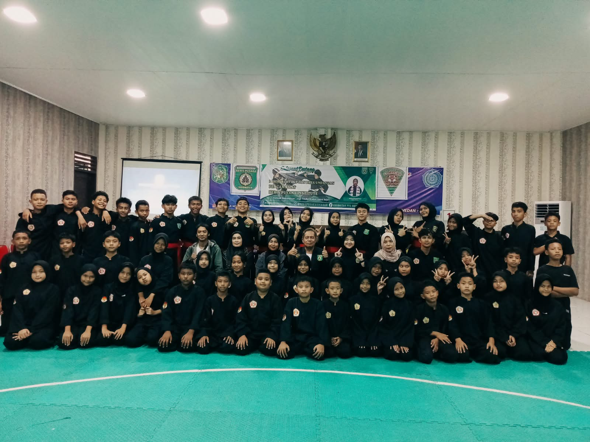

▣WINDOWS 10 ISODOWNLOAD RESMI
▣WINDOWS 10 ISODOWNLOAD RESMIKomputer
Cara Download ISO Windows 10 Resmi Tanpa Media Creation Tool
Trik membuka pilihan ISO Windows 10 langsung dari browser melalui Chrome DevTools.
Baca selengkapnya →Tutorial servis HP, komputer, Windows, Python, dan proyek digital dari Zaycomcell. Dibuat dengan bahasa sederhana supaya mudah dipraktikkan.
▣WINDOWS 10 ISODOWNLOAD RESMITrik membuka pilihan ISO Windows 10 langsung dari browser melalui Chrome DevTools.
Baca selengkapnya → ▱SAMSUNG A10sLAYAR MATI?
▱SAMSUNG A10sLAYAR MATI?Pemeriksaan awal saat Samsung A10s menyala tetapi layarnya bermasalah.
Baca selengkapnya →
▱REDMI NOTE 13 5GPENGGANTIAN LCDHal yang perlu dipahami sebelum memilih panel pengganti Redmi Note 13 5G.
Baca selengkapnya →
◉SKOR DIGITALPENCAK SILATKonsep pencatatan skor pertandingan secara digital dengan pembaruan real-time.
Baca selengkapnya →Contoh proyek CLI untuk belajar menu, transaksi, dan dasar Python.
Baca selengkapnya →Gambaran aplikasi pencatatan inventaris agar pekerjaan gudang lebih teratur.
Baca selengkapnya →